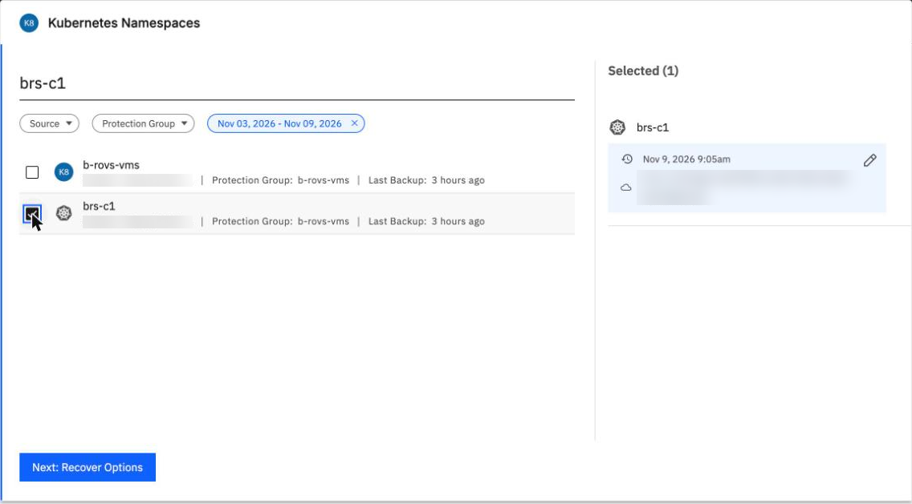
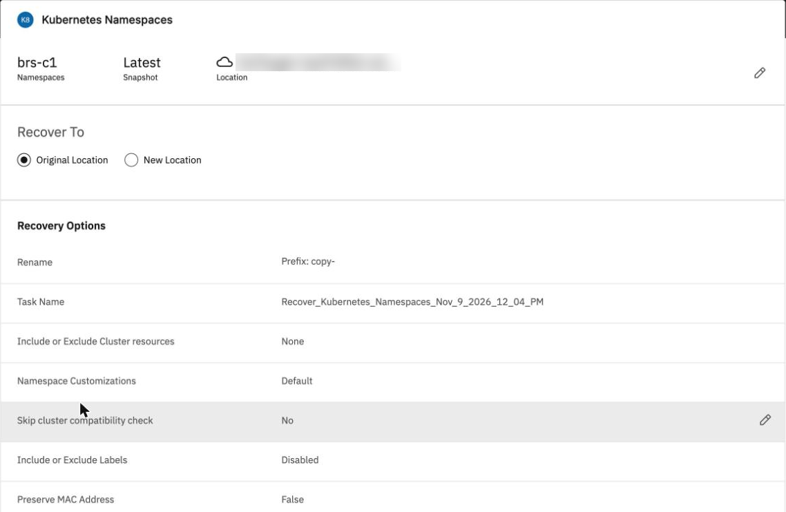
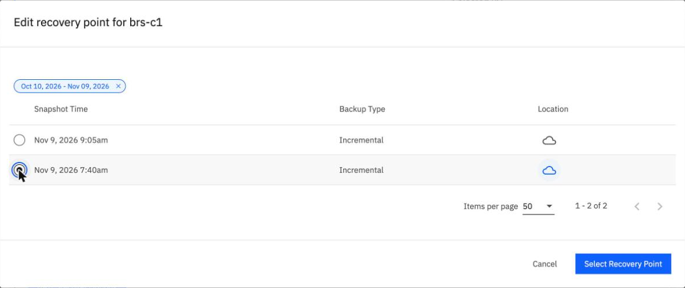
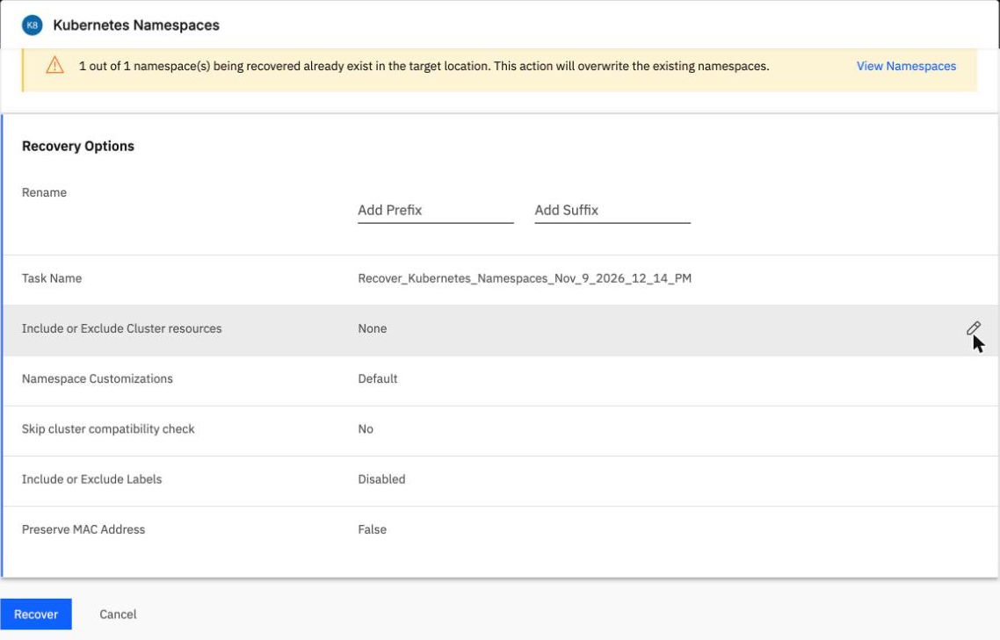
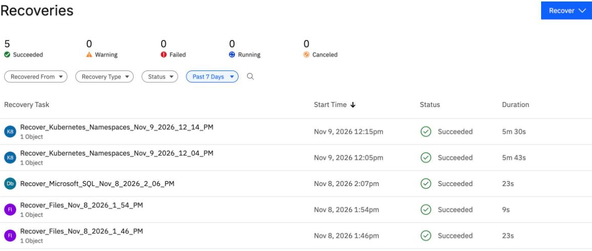

Restore a VM, and how long it really takes
By the end you can say how long a VM restore really took in our lab against IBM's figure, restore a VM in the console, and check that it came back right.
Northgate Freight is a made-up company. Its VMs on ng-cluster-01 are backed up. Now it must restore them, and plan around how long that takes.
OpenShift Virtualization VM backup was not generally available when we tested it (5 October 2026). IBM lists it for the AU-SYD region only: its pages, updated 26 June 2026, call it "intended for testing and proof-of-concept scenarios in the AU-SYD region", and they still said so when we read them on 9 November 2026. Names were changed. Every number and screen comes from real runs in our lab on 5 October and 9 November 2026, recorded in tutorials B5e and B4e. Some screens show lab object names, such as the namespace brs-c1; cluster and location names are blurred.
How long does a restore take?
IBM's pages quote two figures for restoring an OpenShift Virtualization VM. Our lab restored two VMs, four disks and 128.85 GB in all, into a new namespace on 5 October 2026.
IBM: "about six minutes" for one VM with one PVC
"about seven minutes" for a restore
Our lab: two VMs, four disks, 128.85 GB (120 GiB) -> ?
How long did the restore take in our lab?
Show the answer
63 minutes: 3,803 s.It ended Succeeded: 14:25:03 to 15:28:26 UTC, 3,803 s (63.4 min). 128.85 GB in 3,803 s is 33.9 MB/s. A second restore, one VM with two disks of 30 GiB (64.4 GB) from the older backup, took 2,242 s, which is 28.7 MB/s. IBM's figures are for small VMs.
What limited the restore speed in October?
Show the answer
The tutorial's network check, from a worker on 5 October 2026, timed a 2 GiB transfer:
From a ROVS worker, 2 GiB au-syd eu-de Round trip (TCP connect) 0.30 s 0.002-0.008 s Download, 1 stream 32.2 MB/s 83.0 MB/s Download, 10 streams 30.8 MB/s 368.0 MB/s
The restore sat at the au-syd download ceiling, about 31 MB/s. The distance limits it.
Both are single runs. The restore times come from one run each in our lab. The cause is the distance between the two regions in that test; a BRS instance in eu-de would remove it, but IBM offers VM protection only in au-syd today.
Restore, and where it goes
These screens come from the BRS console in our lab on 9 November 2026, with the instance and the cluster both in eu-de. Click where you would click. After two misses the right place is marked.

In Recoveries you searched for brs-c1. Two rows match. Tick the namespace, not the protection group.
Show where
Right: the row with the namespace symbol, brs-c1. The other row is the group b-rovs-vms. The latest backup is chosen.

Recover To starts at Original Location. Where does it say the copy goes to a new namespace?
Show where
Right: Rename: Prefix copy-. The restore goes to a new namespace copy-brs-c1 on the same cluster. The lab kept the defaults, and it Succeeded in 5 min 43 s.

Both recovery points say Incremental, although run 1 was the first. Click the older one.
Show where
Right: 7:40am. Read the time, not the Backup Type.

You cleared Add Prefix. Where does the console warn you?
Show where
Right: the yellow warning says the namespace already exists in the target location and this action will overwrite the existing namespaces. The lab clicked Recover and it Succeeded in 5 min 30 s.

The newest recovery is at the top. Where do you read how long it took?
Show where
Right: Duration, 5m 30s. The other namespace recovery took 5m 43s. That is about six times faster than October: two disks of 30 GiB (64.4 GB) in 343 s and 330 s, about 190 MB/s, against 28.7 to 33.9 MB/s with the service in au-syd.
Go back to the older backup
Northgate rewrote some files after run 1, and run 2 captured them. Now it wants the VM back as it was at run 1, in its own namespace, not in a copy.
Which plan did our lab use?
Show the answer
IBM's page says existing VMs are skipped, not overwritten. The lab deleted the VM first (its DataVolumes and PVCs go with it, the cloud-init Secret stays), then restored from run 1 with the prefix cleared. It Succeeded on 9 November 2026 in 5 min 30 s.
The recovery says Succeeded. How do you know the VM is right?
Show the answer
The tutorial checks the restored VMs, not the job status. After the restore from run 1, manifest 1 came back, not manifest 2, which the disk held before the VM was deleted:
now 8b32e06ca506d0b94e061343698cb43bd1e758885fa7f76fe92a1148cb947d46 (= manifest 1) match-1 20 of 20 zero=0 nonzero=1734
Read the result
Two things from the restore tests that a reader could miss.
Northgate restores a namespace holding a Windows VM. What comes back besides the VM and its disks?
Show the answer
On 5 October 2026 the restore also brought back the Secrets of the whole namespace, and a new vTPM state PVC for the Windows VM. Both VMs were Running 35 s after the recovery ended.
A script restores two VMs through the API and lists each only by its entity ID. BRS answers: Entity name missing in VM resource being restored. What is missing?
Show the answer
In our lab on 5 October 2026 the first call, with no name in the resource list, gave that error. The console route in step 2 does not need it.
Three questions
IBM's page says about six to seven minutes. How long did our lab's restore of 120 GiB take in October?
Show the answer
3,803 s (63.4 min) on 5 October 2026, with the BRS service in au-syd and the cluster in eu-de.
Review from unit 5.3. What did the second backup of a VM read, against the first?
Show the answer
128.86 GB both times on 5 October 2026. What fell was the data sent, from 45.13 GB to 5.50 GB.
Two recovery points both say Incremental. How do you tell which is the older one?
Show the answer
The console labelled both runs Incremental, although run 1 was the first. Read the time.
You can restore a VM and plan the time
IBM says about six to seven minutes for a restore. In our lab on 5 October 2026, 120 GiB took 63 minutes, with the BRS service in au-syd and the cluster in eu-de; the distance limited it. With both in eu-de on 9 November 2026, two disks of 30 GiB took about 5.5 minutes. Check the restored VM against its saved manifest; the status alone does not tell you. VM backup was not generally available when tested, and IBM lists it for au-syd only.
Tutorial B5e restores the VMs, from the console and the command line, and checks them. The speed comparison is in section 10 of tutorial B4e.